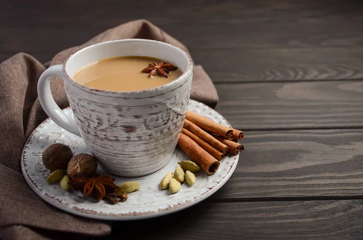

Indian Tea

From Badmaash restaurant, in Los Angeles, this aromatic tea, called "cutting chai" in India, is served in small glasses because it's so strong ("cutting" is the transliteration of the Hindi word for "half"). The black cardamom gives it a smoky, earthy flavor; we recommend starting with the lower amount.
Ingredients:
- 4 teaspoons loose-leaf black tea
- 1 or 2 cinnamon sticks(each about 2 1/2 in. long)
- 1 or 2 black(also called brown) cardamom* pods, crushed with a rolling pin or mallet
- 2 to 4 green cardamom pods, crushed with a rolling pin or mallet
- 1 or 2 quarter-size slices fresh ginger
- 1 1/2 tablespoons sugar
- 1 cup whole or low-fat milk
Steps:
- Pour 2 cups water into a medium saucepan and add tea and spices. Bring to a boil over high heat and boil 2 minutes.
- Add sugar and milk and return to a boil. Reduce heat to medium and boil gently 2 minutes, stirring occasionally. Strain and pour into small cups or heatproof glasses.